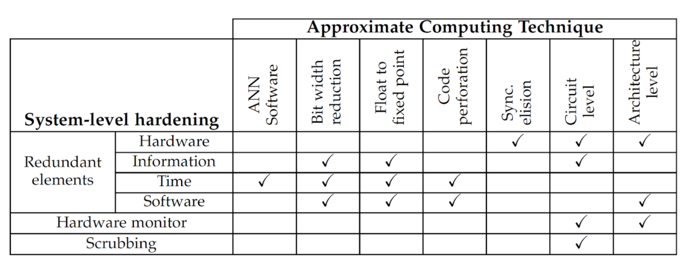

FTxAC
Descripción
-
Los avances tecnológicos en el nivel de integración de
dispositivos semiconductores han aumentado la
susceptibilidad de los circuitos integrados a fallos
inducidos por radiación. Aunque se han propuesto
diferentes técnicas a nivel de software, hardware e
híbridos para la mitigación de este tipo de fallos, todas
ellas causan sobrecostos computacionales que no son
insignificantes en términos de área, consumo de energía y
rendimiento. Recientemente, el uso de la Computación
Aproximada ha tomado relevancia para minimizar los
sobrecostos asociados con la redundancia que conllevan las
técnicas tradicionales de mitigación de fallos.
Por lo tanto pretendemos explorar técnicas de computación aproximada para proponer una estrategia de diseño sistemática de sistemas embebidos tolerantes a fallos inducidos por radiación, reduciendo los sobrecostos computacionales.

Resultados
-
A. Aponte-Moreno, F. Restrepo-Calle and C. Pedraza,
"FTxAC: Leveraging the Approximate Computing Paradigm in
the Design of Fault-Tolerant Embedded Systems to Reduce
Overheads," in IEEE Transactions on Emerging Topics in
Computing, vol. 9, no. 2, pp. 797-810, 1 April-June 2021,
doi: 10.1109/TETC.2020.2986235.

-
A. Aponte-Moreno, F. Restrepo-Calle, C. Pedraza. "Using
Approximate Computing and Selective Hardening for the
Reduction of Overheads in the Design of Radiation-Induced
Fault-Tolerant Systems," in Electronics, vol 8 (issue 12),
1539, 18 pages, 13 December 2019.
-
Alexander Aponte-Moreno, Felipe Restrepo-Calle, and Cesar
Pedraza. "A Low-Overhead Radiation Hardening Approach
using Approximate Computing and Selective Fault Tolerance
Techniques at the Software Level". In Proceedings of the
2019 IEEE European Conference on Radiation and its Effects
on Components and Systems (RADECS). Montpellier, France.
September 16-20th, 2019.
-
Alexander Aponte-Moreno, Cesar Pedraza, and Felipe
Restrepo-Calle. "Reducing Overheads in Software-based
Fault Tolerant Systems using Approximate Computing". In
Proceedings of the 2019 IEEE 20th Latin-American Test
Symposium (LATS). Santiago, Chile, 11th - 13th March, pp.
1-5. doi: 10.1109/LATW.2019.8704586. 2019.
-
A. Aponte-Moreno, A. Moncada, F. Restrepo-Calle and C.
Pedraza. "A review of approximate computing techniques
towards fault mitigation in HW/SW systems". In Proceedings
of the 2018 IEEE 19th Latin-American Test Symposium
(LATS). Sao Paulo, Brazil, 2018, pp. 1-6. doi:
10.1109/LATW.2018.8347241.